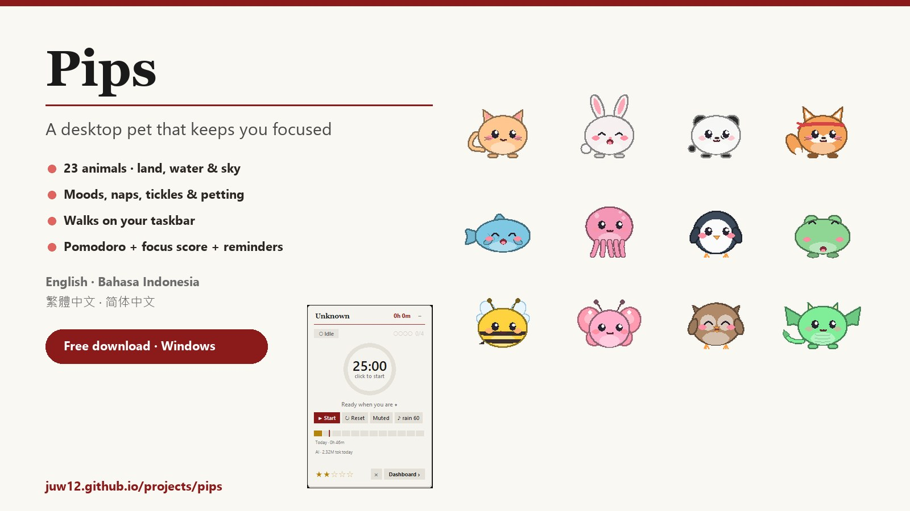
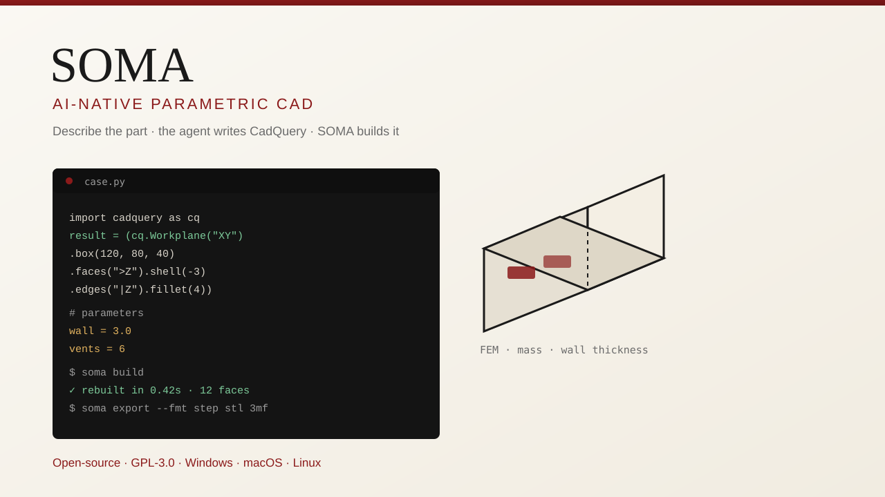

Last shipped 28 Oct 2026 · Pips
Build log.
25 builds · newest first
Engineering tools, CAD models and side projects I’ve shipped. Get one short email when the next one lands.
No spam · unsubscribe in one click · past issues · RSS
- Dwg no.
- JL-002
- Builds
- 25
- Rev
- 26.10.28
- Cadence
- When it ships
Latest build

Pips
Desktop pet + Pomodoro widget for Windows — 23 animals, moods, taskbar walks, reminders, 4 languages.
Open project →All builds #24 → #01
- #2428 Oct 2026
Kitty
Shared budgets you edit live together — 30-second setup, limit warnings, portfolio. 4 languages, free on web, iPhone and Android.
Open →
- #2328 Oct 2026
Vitals
One-step install device health copilot: undoable cleaning, battery forecast, drain detective, QR phone pairing, fix-it chat.
Open →
- #2227 Oct 2026
PLM AML Approval Assistant
Automates a PLM part-approval workflow in Edge — final or conditional — and stops before Submit for a human check.
Open →
- #2127 Oct 2026
Lingua
Universal language helper for Windows, iPhone and Android: text, pictures and live captions, with local AI and offline fallback.
Open →
- #2001 Oct 2026
Airiz Motor
AIRIZ test console for Windows, Android, iPhone and web — USB/Bluetooth jog, motor stop, LEDs, macros, phone camera sharing.
Open →
- #1901 Oct 2026
Vertex
Offline parametric CAD and engineering copilot that repairs models, checks clearances and exports STL, 3MF and DXF.
Open →
- #1801 Oct 2026
3D Models Library
41 landmark and character miniatures as STL/STEP, including a 100 mm Kobo-chan figurine revised for Form 3 SLA.
Open →
- #1701 Oct 2026
Glow
Three AI apps on one free account, in 4 languages — GlowLead plans goals, GlowChat compares models, GlowRoom researches and codes; works offline and installs on Windows, Android, iPhone and Mac.
Open →
- #1601 Oct 2026
Fade
Barber marketplace with haircut shorts — live and free: book barbers, pay them directly at 0% fee, earn from your shorts.
Open →
- #1501 Oct 2026
Sweep
Turns a rough app idea into a scored spec, task board and launch plan, then hands it to Cursor, v0 or Claude Code.
Open →
- #1401 Oct 2026
Shortcraft
Browser studio for faceless explainer shorts — script, voice, captions and 1080×1920 MP4 export with auto-posting.
Open →
- #1301 Oct 2026
Sped
Turns your own songs into sped-up, slowed or mashup 9:16 shorts with captions for TikTok, Reels and Shorts.
Open →
- #1201 Oct 2026
Hazel
Desktop creator studio: generate a video from a prompt, refine it and publish to every platform at once.
Open →
- #1101 Oct 2026
Orbis
Personal comms hub plus live Orbis Chat: real accounts, teams, invites and push alerts on web, iPhone and Android.
Open →
- #1001 Oct 2026
Peers
Offline-first reviews across 32 categories with a Use it / Wait / Skip scorecard, a Ctrl/⌘K palette, saved reviews and dark mode.
Open →
- #0901 Oct 2026
Twin
Investing companion with a five-analyst AI research team, global stock search, paper trading and a replay lab.
Open →
- #0801 Oct 2026
Guang Yao Together · 光耀同行
Unofficial Traditional Chinese learning app for 發一光耀 with lessons, an AI study companion and spaced review.
Open →
- #0701 Oct 2026
House of Articles
Sneaker news meets market data — links athletes’ on-court moments to resale price moves.
Open →
- #0601 Oct 2026
Sync
Listen together in real time across Spotify, Apple Music and YouTube, with voice chat, on web, Android and iPhone.
Open →
- #0501 Oct 2026
SOMA
Open-source AI CAD by Kai Jungsthöfel — a coding agent writes CadQuery, SOMA builds, checks and exports it.
Open →
- #0401 Oct 2026
Vector
AI engineering copilot for Fusion and SOLIDWORKS by Vector Copilot LLC that builds and repairs native features.
Open →
- #0301 Oct 2026
Mint
Describe a spreadsheet, tweak it in plain words, export a working .xlsx and sell it on a built-in marketplace.
Open →
- #0201 Oct 2026
ME R&D Toolkit
Offline workspace for mechanical R&D — NPI task flow, review checklists, issue log and 11 engineering calculators.
Open →
- #0101 Oct 2026
Game Library
A collection of browser games maintained inside Projects.
Open →
Next build drops in your inbox.
One email per ship. Nothing else.